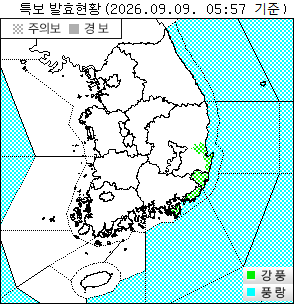
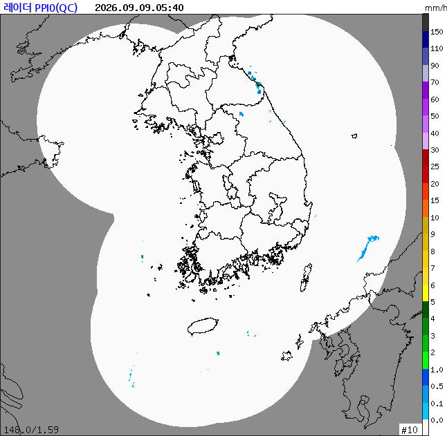

시군별 현재 기상
10개 시군
기상특보 (발효 · 예비)
0건
산불 위험도
국립산림과학원
최근 재난문자
최근 24시간
주요 하천 수위
실시간
동두천 현재 기상
정상
--°
- · 체감 -°
강수-
풍속-
습도-
신천 수위
동두천 송천교
로딩 중
시간대별 예보
12시간
산불 위험도
동두천·연천
로딩 중
동두천 특보 (발효+예비)
없음
재난문자
최근 24시간
🌐 전국 특보 발효도 · 날씨해설
기상청 본청

📡 레이더 합성영상 · 기상정보
실시간

📡
레이더 합성영상 endpoint 신청 대기 중
apihub.kma.go.kr "레이더" 카테고리에서 신청·승인 후 자동 표시
시간대별 예보 (동두천)
24시간